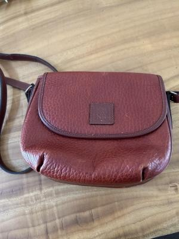
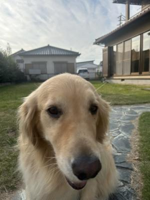

ブランド物たちのプライドは ?
先日ハルから「クリスマスプレゼントちょー」という
メールが届きました・・・(汗)。
連絡くれたと思ったらだいたい「金送れ」か
「⚪︎⚪︎買って ! 」って連絡なんだよ〜・・・。
って、友だちに話したら、高校生男子が「ちょっと声が聞きたくてさ」
とかって、母親に電話してきたら気持ち悪いわと、バッサリ(笑)。
ま ! そりゃそーだな ! (笑)
さて、物欲MAX(笑)の高校生おバカ男子・・・
周りのおぼっちゃまたちに感化されとるんか ?
最近要求してくるものが、結構ブランド物が多いんだよね。
Tシャツ1枚5000円とか・・・(汗)バカなの ?
そんな高価なTシャツ、買えん(爆)。
で、クリスマスプレゼントに要求してきたものはお財布で、
なんか、多分若い子には人気のブランド(聞いたことある気はする・・・)で。
高いものだと6万円って・・・まじすか(汗)。
そーゆーものは、自分で稼げるようになってから自分で買ってください(汗)。
まぁ、財布はできたらいいものを持ったほうがいいとは思うけど。
(決してブランドものという意味ではなく、質の良いものを)
思い出すと、自分も学生の頃はブランド物が欲しいと思っていたなぁ。
若い子はだいたい物欲強めだと思うけど、憧れがあったのかな ?
時代的に、高価なブランドものを持つことがトレンドになってたような気も・・・。
今となっては、ブランド品に高額のお金をかける意味が全く見出せないんよ(笑)。
あたしも歳をとったってことなんかしらね〜。
そんなことがあった後のこと、
実家に寄ったときに母から、「カバンいらない ? 」と、
ブランド物のカバンを渡されてしまった・・・のよね(汗)。
「いらない」って言ったんだけどねぇ・・・
母の年代の人にとって、物を所有することはある意味「幸せ」の象徴で
その代名詞みたいな「ブランドバッグ」は、きっと簡単に処分できないよなぁ。
簡単に捨ててしまうことはできないけど、娘の私に渡すことでなんとなく
荷を下ろした気分になるのかも・・・と、持ち帰って来てしまった(汗)。
きっと私がソレを捨てようが、自分で捨てるわけじゃないので文句はないはず。
一応・・・ブランド品のお嬢様(笑)に敬意を表し、買取業者の査定に出してみた。
そしたら、びっくりな査定結果が・・・(笑)。
NINA RICCI のポシェット
↓

そりゃね・・・確かに年代もんよ ? 使用感もあるわよ ??
でもさぁ・・・査定金額100円って・・・ひーどーいーいぃーー !! (泣)
お嬢様のプライド、ズタボロだわよ〜。
購入当時は蝶よ花よとチヤホヤされただろうに〜 !!
もう・・・かくなる上は静かに舞台から退場するしかない ??
でも買取業者が100円でも買い取ってくれるというのなら
もしかしたら、すんばらしいクリーニング・修理のノウハウがあって、
その後の人生を(・・・すっかり擬人化 笑)穏やかに送れるかもしれない ?
送料無料の配送キットを送ってくれるというので、
没落貴族のお嬢様、人生最後の一発逆転を願って送り出すことにしました。
がんばれ ! ニナ・リッチ嬢 !
・・・って、完全妄想で盛り上がる自分が面白すぎる・・・(爆)。
思えばバブルの頃だったか・・・もう覚えてませんが・・・
血眼でブランド物を求めていたのは、一体何の悪夢だったのかしら〜。
と、冷めた思いで考えてしまうことも、ちょっと寂しいような・・・。

ひましゃんはぶらんどなんてきにしましぇんよ。
だって、なかみでしょうぶでしゅ !
ひましゃんはまけましぇんよ !!